컴퓨터응용밀링기능사 (2013-10-12 기출문제)
1과목: 기계재료 및 요소
1. 70%의 구리에 30%의 Pb를 첨가한 대표적인 구리합금으로 화이트 메탈보다 내하중성이 커서 고속․고하중용 베어링으로 적합하여 자동차, 항공기 등의 주 베어링으로 이용되는 것은?
- 알루미늄 청동
- 베릴륨 청동
- 애드미럴티 포금
- 켈밋 합금
(정답률: 49%)

2. Cu 60% - Zn 40% 합금으로 상온조직이 α+β 상으로 탈아연 부식을 일으키기 쉬우나 강력하기 때문에 기계부품용으로 널리 쓰이는 것은?
- 켈밋
- 문쯔메탈
- 톰백
- 하이드로날륨
(정답률: 75%)
3. 규소강의 주된 용도로 가장 적합한 것은?
- 줄 또는 해머
- 변압기의 철심
- 선반용 바이트
- 마이크로미터의 슬리브
(정답률: 53%)
4. Fe-C 상태도에 의한 강의 분류에서 탄소함유량이 0.0218 ~ 0.77%에 해당하는 강은?
- 아공석강
- 공석강
- 과공석강
- 정공석강
(정답률: 60%)
5. 주철조직에 니켈이 잘 고용되어 있으면 여러 가지 좋은 점이 나타내는데 그 내용으로 틀린 것은?
- 강도를 증가시킨다.
- 펄라이트를 미세하게 하여 흑연화를 촉진시킨다.
- 내열성, 내식성, 내마멸성을 증가시킨다.
- 얇은 부분의 칠(chill)의 발생을 촉진시킨다.
(정답률: 59%)
6. 강의 표면에 암모니아가스를 침투시켜 내마멸성과 내식성을 향상시키는 표면경화법은?
- 침탄법
- 시안화법
- 질화법
- 고주파경화법
(정답률: 49%)
7. 금속은 전류를 흘리면 전류가 소모되는데 어떤 금속에서는 어느 일정 온도에서 갑자기 전기저항이 ‘0’ 이 된다. 이러한 현상은?
- 초전도 현상
- 임계 현상
- 전기장 현상
- 자기장 현상
(정답률: 73%)
8. 미끄럼 베어링의 윤활 방법이 아닌 것은?
- 적하 급유법
- 패드 급유법
- 오일링 급유법
- 그리스 급유법
(정답률: 62%)
9. 비틀림모멘트 440N․m, 회전수 300 rev/min(=rpm)인 전동축의 전달 동력(kW)은?
- 5.8
- 13.8
- 27.6
- 56.6
(정답률: 53%)
10. 일반적으로 사용하는 안전율은 어느 것인가?
- 사용응력/허용응력
- 허용응력/기준강도
- 기준강도/허용응력
- 허용응력/사용응력
(정답률: 50%)
11. 결합용 기계요소인 와셔를 사용하는 이유가 아닌 것은?
- 볼트 머리보다 구멍이 클 때
- 볼트 길이가 길어 체결여유가 많을 때
- 자리면이 볼트 체결압력을 지탱하기 어려울 때
- 너트가 닿는 자리면이 거칠거나 기울어져 있을 때
(정답률: 49%)
12. 회전축의 회전방향이 양쪽 방향인 경우 2쌍의 접선키를 설치할 때 접선키의 중심각은?
- 30°
- 60°
- 90°
- 120°
(정답률: 44%)
13. 축이나 구멍에 설치한 부품이 축 방향으로 이동하는 것을 방지하는 목적으로 주로 사용하며, 가옥과 설치가 쉬워 소형정밀기기나 전자기기에 많이 사용되는 기계요소는?
- 키
- 코터
- 멈춤링
- 커플링
(정답률: 40%)
14. 기어에서 이의 간섭 방지 대책으로 틀린 것은?
- 압력각을 크게 한다.
- 이의 높이를 높인다.
- 이끝을 둥글게 한다.
- 피니언의 이뿌리면을 파낸다.
(정답률: 50%)
15. 나사의 풀림 방지법이 아닌 것은?
- 철사를 사용하는 방법
- 와셔를 사용하는 방법
- 로크 너트에 의한 방법
- 사각 너트에 의한 방법
(정답률: 49%)
2과목: 기계제도(절삭부분)
16. 그림과 같은 입체도에서 화살표 방향이 정면일 때 우측면도로 적합한 것은?
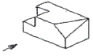
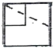
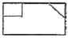
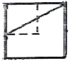
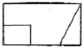
(정답률: 78%)
17. 기계 제도에서 굵은 1점 쇄선을 사용하는 경우로 가장 적합한 것은?
- 대상물의 보이는 부분의 겉모양을 표시하기 위하여 사용한다.
- 치수를 기입하기 위하여 사용한다.
- 도형의 중심을 표시하기 위하여 사용한다.
- 특수한 가공 부위를 표시하기 위하여 사용한다.
(정답률: 63%)
18. KS 기어 제도의 도시방법 설명으로 올바른 것은?
- 잇봉우리원은 가는 실선으로 그린다.
- 피치원은 가는 1점 쇄선으로 그린다.
- 이골원은 가는 2점 쇄선으로 그린다.
- 잇줄 방향은 보통 2개의 가는 1점 쇄선으로 그린다.
(정답률: 61%)
19. 그림과 같은 기하공차 기입틀에서 첫째구획에 들어가는 내용은?(오류 신고가 접수된 문제입니다. 반드시 정답과 해설을 확인하시기 바랍니다.)
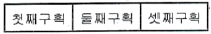
- 공차값
- MMC 기호
- 공차의 종류 기호
- 데이텀을 지시하는 문자 기호
(정답률: 63%)
20. 구멍
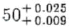
에 조립되는 축의 치수가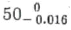
이라면 이는 어떤 끼워 맞춤인가?- 구멍 기준식 헐거운 끼워맞춤
- 구멍 기준식 중간 끼워맞춤
- 축 기준식 헐거운 끼워맞춤
- 축 기준식 중간 끼워맞춤
(정답률: 33%)
21. 다음 중 기계제도에서 각도 치수를 나타내는 치수선과 치수 보조선의 사용 방법으로 올바른 것은?
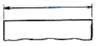
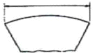
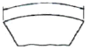
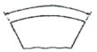
(정답률: 60%)
22. 비경화 테이퍼 핀의 호칭 지름을 나타내는 부분은?
- 가장 가는 쪽의 지름
- 가장 굵은 쪽의 지름
- 중간 부분의 지름
- 핀 구멍 지름
(정답률: 44%)
23. 가공 방법의 표시방법 중 M은 어떤 가공 방법인가?
- 선반 가공
- 밀링 가공
- 평삭 가공
- 주조
(정답률: 83%)
24. 다음 선의 종류 중에서 선이 중복되는 경우 가장 우선하여 그려야 되는 선은?
- 외형선
- 중심선
- 숨은선
- 치수보조선
(정답률: 76%)
25. 공유압 기호에서 기호의 표시방법과 해석에 관한 설명으로 틀린 것은?
- 기호는 기기의 실제 구조를 나타내는 것은 아니다.
- 기호는 원칙적으로 통상의 운휴상태 또는 기능적인 중립상태를 나타낸다.
- 숫자를 제외한 기호 속의 문자는 기호의 일부분이다.
- 기호는 압력, 유량 등의 수치 또는 기기의 설정 값을 표시하는 것이다.
(정답률: 31%)
26. 절삭유에 높은 윤환효과를 얻도록 첨가제를 사용하는데 동식물류에 사용하는 첨가제로 거리가 먼 것은?
- 유황
- 흑연
- 아연
- 규산염
(정답률: 44%)
27. 밀링 머신에서 둥근 단면의 공작물을 사각, 육각 등으로 가공할 때에 편리하게 사용되는 부속 장치는
- 분할대
- 릴리빙 장치
- 슬로팅 장치
- 래크 절삭 장치
(정답률: 43%)
28. 3개의 조가 120° 간격으로 구성 배치되어 있는 척은?
- 콜릿척
- 단동척
- 복동척
- 연동척
(정답률: 70%)
29. 나사 마이크로미터는 앤빌이 나사의 산과 골 사이에 끼워지도록 되어 있으며 나사에 알맞게 끼워 넣어서 나사의 어느 부분을 측정하는가?
- 바깥 지름
- 골 지름
- 유효 지름
- 안지름
(정답률: 43%)
30. 절삭공구 수명이 종료되고 공구를 재 연삭하거나 새로운 절삭공구로 바꾸기 위한 공구수명 판정법으로 틀린 것은?
- 공구 인선의 마모가 일정량에 달했을 때
- 절삭저항의 주 분력에는 변화가 적어도 이송분력이나 배분력이 급격히 증가할 때
- 완성 치수의 변화량이 없을 때
- 가공면에 광택이 있는 색조 또는 반점이 생길 때
(정답률: 64%)
3과목: 기계공작법
31. 다음 그림의 연강을 적삭할 때 일반적인 칩 형태의 범위를 나타낸 것이다. (A), (B), (C)에 해당하는 칩 형태를 바르게 짝지은 것은?
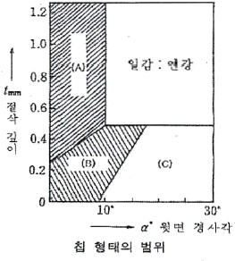
- (A) : 경작형, (B) : 유동형, (C) : 전단형
- (A) : 경작형, (B) : 전단형, (C) : 유동형
- (A) : 전단형, (B) : 유동형, (C) : 균열형
- (A) : 유동형, (B) : 균열형, (C) : 전단형
(정답률: 52%)
32. 물이나 경유 등에 연삭 입자를 혼합한 가공액을 공구의 진동면과 일감 사이에 주입시켜 가며 기계적으로 진동을 주어 표면을 다듬는 가공 방법은?
- 방전 가공
- 화학적 가공
- 전자빔 가공
- 초음파 가공
(정답률: 54%)
33. 연삭 숫돌에서 결합도가 높은 숫돌을 사용하는 조건에 해당하지 않는 것은?
- 경도가 큰 가공물을 연삭할 때
- 숫돌차의 원주 속도가 느릴 때
- 연삭 깊이가 작을 때
- 접촉 면적이 작을 때
(정답률: 35%)
34. 보통선반에서 왕복대의 구성요소에 포함되지 않는 것은?
- 심압대(tail stock)
- 에이프런(apron)
- 새들(saddle)
- 공구대(tool post)
(정답률: 45%)
35. 탭으로 암나사를 가공하기 위해서는 먼저 드릴로 구멍을 뚫고 탭 작업을 해야 한다. M6x1.0의 탭을 가공하기 위한 드릴지름을 구하는 식으로 맞는 것은?(단, d=드릴 지름, M=수나사의 바끝지름, P=나사의 피치이다.)
- d = M x P
- d = P - M
- d = M - P
- d = M - 2P
(정답률: 51%)
36. 밀링 커터(cutter)에 의한 절삭 방향 중 하향 절삭가공의 장점은?
- 절삭열에 의한 치수 정밀도의 변화가 작다.
- 칩(chip)이 절삭날의 진행을 방해 하지 않는다.
- 커터(cutter)의 날이 마찰 작용을 하지 않으므로 날의 마멸이 작고 수명이 길다.
- 이송기구의 백 래시(backlash)가 자연히 제거된다.
(정답률: 59%)
37. 다음 기계 중 원형 구멍 가공(드릴링)에 가장 부적합한 기계는?
- 머시닝센터
- CNC 밀링
- CNC 선반
- 슬로터
(정답률: 61%)
38. 다음 절삭 공구 중 밀링 커터와 같은 회전 공구로 래크를 나선 모양으로 감고, 스파이럴에 직각이 되도록 축 방향으로 여러개의 홈을 파서 절삭날을 형성하는 것은?
- 호브
- 래크 커터
- 피니언 커터
- 총형 커터
(정답률: 25%)
39. 원형 단명봉의 지름 85mm, 절삭속도 150m/min 일 때 회전수는 약 몇 rpm 인가?
- 458
- 562
- 1764
- 180
(정답률: 59%)
40. 측정 대상물을 측정기의 눈금을 이용하여 직접적으로 측정하는 길이 측정기는?
- 버니어 켈리퍼스
- 다이얼 게이지
- 게이지 블록
- 사인바
(정답률: 77%)
4과목: CNC공작법 및 안전관리
41. 밀링 커터의 공구각 중 날의 윗면과 날 끝을 지나는 중심선 사이의 각으로 크게 하면 절삭 저항은 감소하나 날이 약해지는 단점을 갖는 것은?
- 랜드
- 경사각
- 날끝각
- 여유각
(정답률: 48%)
42. 가늘고 긴 일감을 지지하는데 센터나 척을 사용하지 않고 일감의 바깥면을 연삭하는 연삭기는?
- 원통 연삭기
- 만능 연삭기
- 평면 연삭기
- 센터리스 연삭기
(정답률: 70%)
43. CNC선반 가공에서 단조나 주조물에 가공여유가 포함되어 일정한 형태를 가지고 있는 부품가공에 효과적인 유형 반복 사이클 G-코드는?
- G74
- G71
- G72
- G73
(정답률: 31%)
44. 머시닝센터에서 120rpm으로 회전하는 주축에 피치 2mm의 나사를 내려고 한다. 주축의 이동 속도는 몇 mm/min인가?
- 100
- 120
- 200
- 240
(정답률: 68%)
45. CNC선반에서 다이아몬드(PCD : Poly crystalline diamond) 바이트로 적삭하기에 가장 부적합한 재료는?
- 알루미늄합금
- 구리합금
- 담금질된 강
- 텅스텐 카바이드
(정답률: 45%)
46. CAD/CAM용 하드웨어 구성에서 중앙처리장치의 구성에 해당하지 않은 것은?
- 주기억장치
- 연산논리장치
- 제어장치
- 입력장치
(정답률: 53%)
47. 다음과 같은 그림에서 A점에서 B점까지 이동하는 CNC 선반 가공 프로그램에서 ( ) 안에 알맞은 준비기능은?
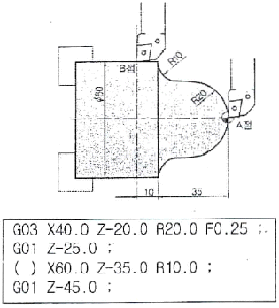
- G00
- G01
- G02
- G03
(정답률: 59%)
48. 밀링작업 안전에 대하여 설명한 것 중 틀린 것은?
- 정면 커터 작업시에는 칩이 튀어나오므로 칩 커버를 설치하는 것이 좋다.
- 주축 회전 중에 커터 주위에 손을 대거나 브러시를 사용하여 칩을 제거해서는 안된다.
- 가공 중에 기계에 얼굴을 가까이 대고 확인한다.
- 테이블 위에는 측정기나 공구류를 올려놓지 않는다.
(정답률: 85%)
49. 다음 프로그램은 어느 부분을 가공하는 것인가?
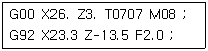
- 외경 황삭가공
- 외경 정삭가공
- 홈 가공
- 나사 가공
(정답률: 57%)
50. CNC 프로그램에서 보조기능 M01 이 뜻하는 것은?
- 프로그램 정지
- 프로그램 끝
- 선택적 프로그램 정지
- 프로그램 끝 및 재개
(정답률: 62%)
51. 다음은 머시닝센터에서 프릴사이클을 이용하여 구멍을 가공하는 프로그램의 일부이다. 설명 중 틀린 것은?(오류 신고가 접수된 문제입니다. 반드시 정답과 해설을 확인하시기 바랍니다.)
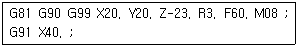
- 구멍 가공의 위치는 X가 20mm이고 Y가 20mm인 위치이다.
- 구멍 가공의 깊이는 23mm이다.
- G99는 초기점 복귀 명령이다.
- 이송속도는 60m/min이다.
(정답률: 55%)
52. CNC 선반의 드릴가공이나 나사가공에서 주축 회전수를 일정하게 유지하고자 할 때 사용하는 준비 기능은?
- G50
- G90
- G97
- G98
(정답률: 53%)
53. 공작기계의 핸들 대신에 구동모터를 장치하여 임의의 위치에 필요한 속도로 테이블을 이동시켜 주는 기구의 명칭은?
- 펀칭기구
- 검축기구
- 서보기구
- 인터페이스 회로
(정답률: 74%)
54. CNC 공작기계가 한번의 동작을 하는데 필요한 정보가 담겨져 있는 지령 단위를 무엇이라고 하는가?
- 어드레스(address)
- 데이터(data)
- 블록(block)
- 프로그램(program)
(정답률: 57%)
55. CNC선반에서 1초동안 일시정지(dwell)을 지령하는 방법이 아닌 것은?
- G04 Q1000
- G04 P1000
- G04 X1.
- G04 U1.
(정답률: 57%)
56. CNC선반 베드 면에 습동유가 나오는지 손으로 확인하는 것은 어느 점검 사항에 해당하는가?
- 수평 점검
- 압력 점검
- 외관 점검
- 기계의 정도 점검
(정답률: 55%)
57. 머시닝센터의 보정기능에서 공구 지름 보정 G-코드가 아닌 것은?
- G40
- G41
- G42
- G43
(정답률: 59%)
58. 다음 중 CNC선반에서 가공하기 어려운 것은?
- 나사 가공
- 래크 가공
- 홈 가공
- 드릴 가공
(정답률: 58%)
59. 머시닝센터 가공시 안전사항으로 틀린 것은?
- 기계에 전원 투입후 안전 위치에서 저속으로 원점 복귀한다.
- 핸들 운전시에 기계에 무리한 힘이 전달 되지 않도록 핸들을 천천히 돌린다.
- 위험 상황에 대비하여 항상 비상정지 스위치를 누를 수 있도록 준비한다.
- 급속이송 운전은 항상 고속을 선택한 후 운전한다.
(정답률: 78%)
60. 일반적으로 CNC선반 작업 중 기계원점 복귀를 해야 하는 경우에 해당하지 않는 것은?
- 처음 전원스위치를 ON하였을 때
- 작업 중 비상정지버튼을 눌렀을 때
- 작업 중 이송정지(feed hold) 버튼을 눌렀을 때
- 기계가 행정한계를 벗어나 경보(alarm)가 발생하여 형정오버해제 버튼을 누르고 경보(alarm)를 해제하였을 때
(정답률: 64%)